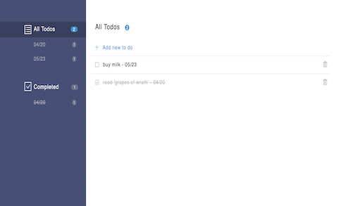

Jacob Coker-Dukowitz
I'm a software engineer in the San Fransisco Bay Area with experience in web application development, cloud platforms, container based deployment as well as extensive project & organizational management background.
I'm also a Co-creator of the Mashr framework.

Mashr is an open source data pipeline orchestration and monitoring framework for small applications.
Mashr simplifies the process of taking your data from disparate sources and putting them into a single place so that you can use that data. It is optimized for data pipeline best practices including monitoring for each step of your data pipeline along with archiving and backup in case of failover. Mashr is built with Node.js, provides an easy-to-use CLI, and uses Docker to host Embulk on GCE Instances on Google Cloud Platform (GCP).
READ THE MASHR CASE STUDYOther projects
-

Airline Routes
An application that allows users to view and filter airline routes on a clickable svg map. Bootstrapped with Create React App.
-

Poster
A Reddit-like application built with Rails and PostgreSQL which allows authenticated users to create, comment, upvote or downvote posts.
-

Taskit
A responsive task managament application built with a Ruby and Sinatra backend and JavaScript(ES6), JQuery, and Handlebars.js frontend.